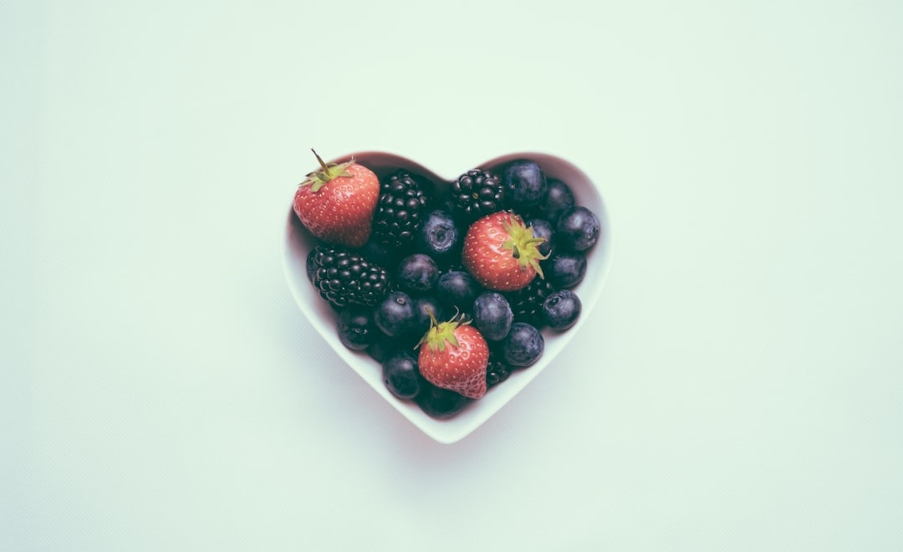

Manfaat Buah Buahan
Sumber Vitamin dan Mineral: Buah-buahan kaya akan vitamin dan mineral, seperti vitamin C, vitamin A, kalium, dan folat, yang penting untuk menjaga kesehatan tubuh.
Kaya Serat: Banyak buah mengandung serat, yang baik untuk pencernaan dan dapat membantu mencegah sembelit. Serat juga dapat membantu menurunkan risiko penyakit jantung dan diabetes.
Antioksidan: Buah-buahan mengandung antioksidan, yang dapat melindungi sel-sel tubuh dari kerusakan akibat radikal bebas. Ini dapat membantu mengurangi risiko beberapa penyakit kronis, termasuk kanker.